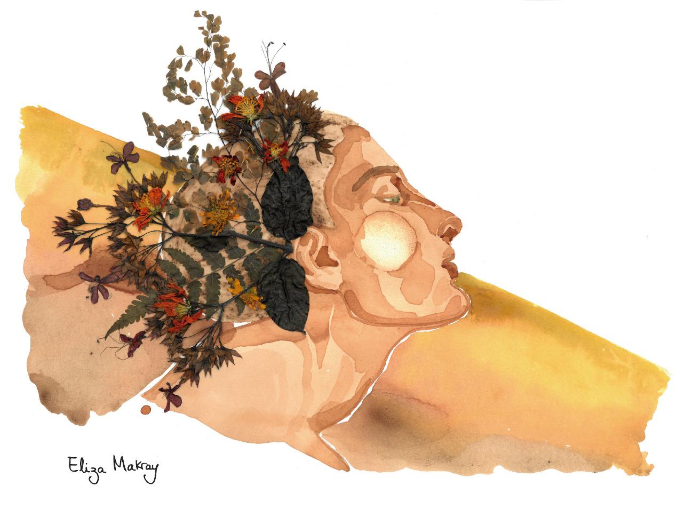
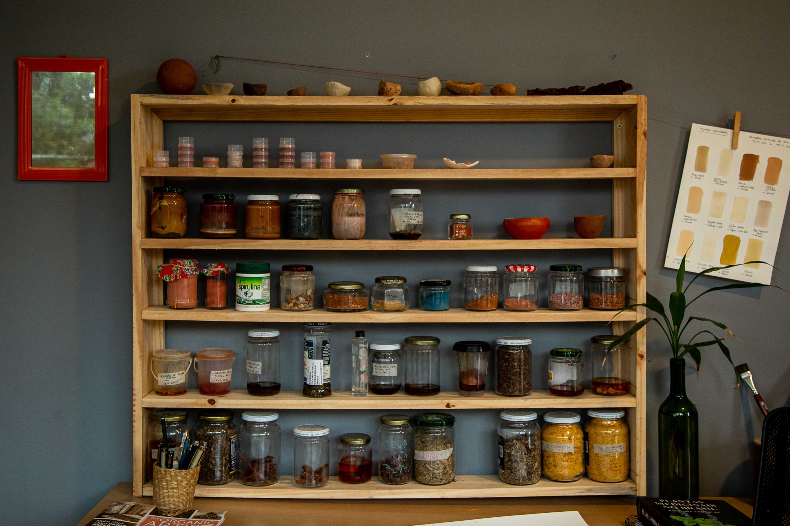
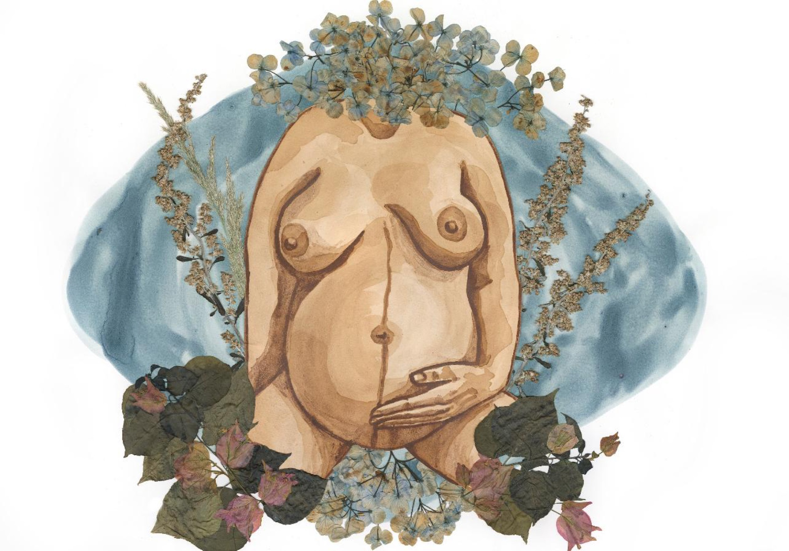
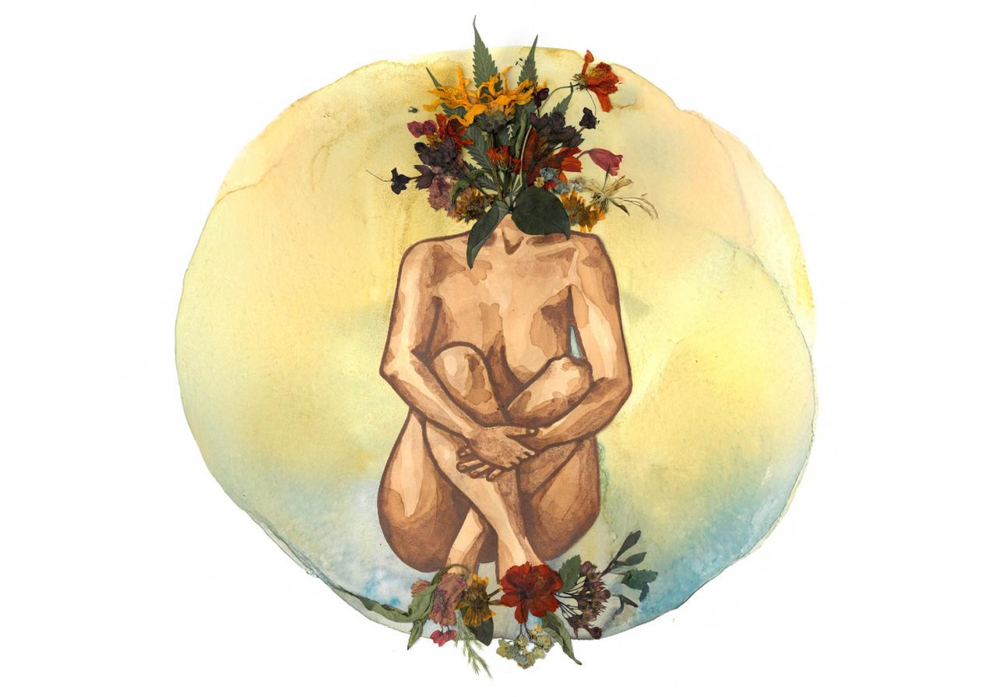

DOZE MESES.
UM CICLO DE ARTE,
NATUREZA E PRESENÇA.
O Calendário Musas transforma o universo botânico e feminino de Eliza Makray em um objeto que acompanha a vida cotidiana — doze meses ilustrados com aquarelas naturais feitas de plantas, minerais e memória.
Pagamento processado com segurança pelo Mercado Pago.

Um calendário nascido da terra
Cada ilustração parte de pigmentos extraídos à mão — pau-ferro, urucum, barbatimão, cúrcuma, espirulina — colhidos e preparados por Eliza em seu ateliê em Florianópolis. O calendário reúne essa pesquisa botânica em uma peça funcional, para viver junto de você o ano inteiro.
Matéria, pigmento, gesto, obra, calendário
Matéria
Terra, plantas e minerais coletados em territórios de Santa Catarina — a matéria-prima de toda a paleta de Eliza.

Pigmento
Cada frasco guarda uma cor extraída de plantas, terras e resíduos orgânicos — o arquivo vivo do ateliê.
Gesto
A mão de Eliza aplica o pigmento sobre o papel — um gesto lento, repetido, atento aos ciclos naturais.


Obra
A aquarela natural finalizada — parte da série Musa, o coração visual do calendário.
Calendário
Doze obras, doze meses — impressas e encadernadas para acompanhar o seu ano.
Detalhes do Calendário Musas
As imagens abaixo são espaços reservados — substitua por fotografias reais do calendário impresso (capa, miolo aberto, encadernação, papel, parede, embalagem).
Informações do produto
- Ano
- [ANO]
- Preço
- [PREÇO]
- Formato
- [FORMATO]
- Dimensões
- [DIMENSÕES]
- Número de páginas
- [NÚMERO_DE_PÁGINAS]
- Tipo de papel
- [TIPO_DE_PAPEL]
- Regiões de envio
- [REGIÕES_DE_ENVIO]
- Prazo de entrega
- [PRAZO]
- Tiragem
- [TIRAGEM]
Eliza Makray
Artista multidisciplinar brasileira baseada em Florianópolis, reconhecida por sua pesquisa em pigmentos naturais e por exposições individuais como Terra Fértil e Musas em Retratos: 8 inspirações em Florianópolis, ambas na Galeria Lama (2025), além de participações em festivais e coletivas em Santa Catarina desde 2020.
O Calendário Musas é uma extensão direta dessa pesquisa — cada ilustração nasce do mesmo processo manual e botânico que sustenta toda a sua obra.
Conhecer a trajetória completaPerguntas frequentes
Ao clicar em "Quero meu calendário", você será direcionado ao checkout seguro do Mercado Pago para concluir o pagamento. Após a confirmação, você receberá as próximas informações por e-mail ou WhatsApp.
[DIMENSÕES] — informação a confirmar.
[SUPORTE_PARA_PENDURAR] — informação a confirmar.
Envio para [REGIÕES_DE_ENVIO], com embalagem cuidadosa para preservar a peça em trânsito.
O prazo estimado é de [PRAZO] após a confirmação do pagamento.
Sim — a quantidade pode ser ajustada diretamente no checkout do Mercado Pago, sujeita à disponibilidade da tiragem de [TIRAGEM] exemplares.
Todas as formas de pagamento oferecidas pelo Mercado Pago no checkout — cartão de crédito, débito, Pix e boleto, conforme disponibilidade.
Escreva para [EMAIL_DA_ARTISTA] ou pelo WhatsApp.
